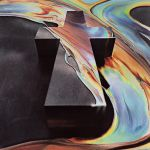
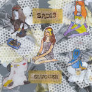

Quick Takes (November 2016)
As we prepare to publish our Year-End lists (hit: it's coming very, very soon), that doesn't mean we'd still ignore our regularly scheduled Quick Takes feature. Carl and I, however, do have to acknowledge that because of the madness that goes behind-the-scenes this time of year, this month's will feature a smaller quantity of reviews. But also, due to the fact that November is categorically known as a month without too many releases.
So what are our top picks, you say? Well, I very much enjoyed Dawn Richard's quite inventive return with Redemption, but the same cannot be said about Sleigh Bells. Carl, on the other hand, enjoyed all of his selections, especially Sadie Dupuis's first solo effort outside of Speedy Ortiz.
We're taking a short break for the month of December so I hope you don't miss us too much (and honestly, do you guys want us to review the latest Christmas albums by Pentatonix, Neil Diamond or even worse...She & Him?) *shudders* We'll be back in early February with our picks for January 2017, but until then, keep your eyes peeled for more great features and, of course, full-lenghth reviews. And it does bear repeating: you can always reach us on facebook, or on our official twitter page.
Happy Holidays! - Juan
...
 American Wrestlers
American Wrestlers
Goodbye Terrible Youth
(Fat Possum)
You’d expect that a Scottish indie rock craftsman like Roy Thomas Baker would feel out of place in a city like St. Louis, Missouri, though the main backbone of his unvarnished recording technique originally stems from midwestern American cities like the one where he currently resides. His solo project, American Wrestlers, embraces a kind of lo-fidelity clatter that oftentimes obscures his knack for pop hooks. And that’s okay; Guided by Voices developed a whole career out of it. Things haven’t changed much since his self-titled debut effort, which emphasized warm, electric guitar-centered compositions with something of a basement feel. Goodbye Terrible Youth is a smidgen more focused (and with somewhat better recording quality) as opposed to his debut’s more meandering songs, though it still retains that amiable, low-key rock feel even if he’s now incorporating more synths into the mix. It does breeze on by without any major impact, but there’s a select number of pleasantly bittersweet cuts that are sure to liven up your afternoon commute for weeks on end. [7/10] Juan Edgardo Rodríguez
 Dawn Richard
Dawn Richard
Redemption
(Local Action Records / Our Dawn Entertainment)
There’s no straightforward way to approach a Dawn Richard record. You let it absorb you with its vast and rich sonic palette, and it’ll unquestionably keep you guessing from start to finish. Following Richard’s breakthrough Blackheart, she takes a completely new stance in Redemption, where outré dancehall beats and sultry rhythms provide a space for her to engage with her own fantasies. But she’s also seeking to express herself in a more vulnerable state, like in Vines (Interlude), where she’s frustrated with a relationship that’s reached an unfortunate standstill. But for the most part, songs like Love Under Lights and Renegades further illustrate the fun side of loving relationships. Richard is guiding you through a variety of emotions, both the painful and the pleasurable, and it surely doesn’t hurt that Redemption provides such a colorful and inventive soundtrack as she confronts them. It’s an arc that she manages to complete with her conceptual solo trilogy, and though the pop chart-minded songs devalue the album’s more adventurous pursuits, Richard is still devoted to push her art in new, unexplored directions. [7/10] Juan Edgardo Rodríguez
Honeyblood
Babes Never Die
(Fat Cat)
Glaswegian duo Honeyblood’s second LP arrives with the work of half of its original lineup, with drummer Shona McVicar upping and leaving the band shortly after their self-titled debut was dropped in 2014. Cat Myers replaced McVicar not long afterwards, and her presence in the band has gone an awful long way to sharpening up the fuzzed-out, grunge-tinged indie pop. Honeyblood’s songwriting relies heavily on breezy hooks, and Myers' taut stickwork adds a markedly more assured stride to her new band’s blustering sound. The immediacy of one particular track – Waiting For The Magic – has been used as an ad-break anthem for Sky Sports, thrusting the track's most grappling moment into ears much further afield than Honeyblood’s usual catchment area. It’s easy to make comparisons with contemporaries - namely the likes of Best Coast – but Stina Tweeddale and Cat Myers transfer so much personality to their tracks that a deeper, more lasting impression is given. [7/10] Carl Purvis
Justice
Woman
(Ed Banger Records)
Gaspard Augé and Xavier de Rosnay are back after five years away with Justice’s 3rd LP, continuing with a fundamentally organic approach to their Technicolored disco sound. Woman is an album full of tracks drenched in psychedelic swirls and pounding, abrasive electro, but the amount of light illuminating the pelvis-thrusting soundscapes turns the record into a weightless affair. The exhilarating slap-bass of opening track Safe and Sound governs the sparkling synths and buoyant strings loosely enough to keep the sound carefree and composed, whilst the falsetto vocal adds further to the effect, making for an immediately gratifying soundscape. Generally speaking, the beats remain hard enough, and the riffs have a sharp enough edge to maintain Woman’s effect throughout, and the elastic textures created by Augé and de Rosnay display a real lushness, warm and cold in equal measures. For the most part, Woman shows that Justice have as much confidence, assurance and just as big a penchant for a banger as ever. [7/10] Carl Purvis
Sad13
Slugger
(Carpark Records)
Anyone who read my review of Speedy Ortiz’s second LP last year knows how highly I rate Sadie Dupuis. Her ensnaring, spiky riffs and razor-sharp wordplay have turned her band into a real rock gem, but with her debut solo record, she has substituted the cutting, interlacing guitars for sparkling, synth-laden pop. The sugar-sweet melodies provide a different breed of canvas for Dupuis’s lexical prowess to work with, and if anything, it softens the impact of the delivery of such genuine, relevant lyrical content. The album’s prevailing manifesto is relationship equity, and in Sadie’s own words, putting “affirmative consent at the heart of the matter and deescalating the toxic jealously and ownership that are often centred in romantic pop songs,” and she does that in typically eloquent fashion. Dupuis has engineered a candied vehicle to convey a highly relevant paradigm, and although its lo-fi sound means that the messages aren’t as bullish as they could be, it is sonically deft, and an excellent record. [8/10] Carl Purvis
 Sleigh Bells
Sleigh Bells
Jessica Rabbit
(Torn Clean)
Hype was always going to haunt Sleigh Bells. And how could it not - though their notorious debut effort, Treats, attempted a novel way to reconstruct the more strict formalities of pop music, it was also a poorly executed one-trick pony embroiled with overwrought riffs and tacky synth blares. They haven’t been exactly shy about changing much of that album's original luster with their two follow-ups, Reign of Terror and Bitter Rivals, both of which have a similarly undercooked rawness to them. So it’s surprising to hear that their latest, Jessica Rabbit, does revise some of their original input but with some breathing room to spare. Unfortunately, their attempt at trying to sound clever is nothing but smoke and mirrors, as songs dawdle between sparkling pop (I Can’t Stand You Anymore), revolting post-grunge (Throw Me Down the Stairs), and metallic synth-pop (I Can Only Stare) with that same stubborn adherence to those aimless cut-and-paste arrangements. Alexis Krauss is still a potent vocal performer, though the same cannot be said for an album that stubbornly covers the entire contemporary pop gamut with an irritating self-confidence. It ultimately sabotages their own efforts. [5/10] Juan Edgardo Rodríguez
12 December, 2016 - 00:32 — No Ripcord Staff